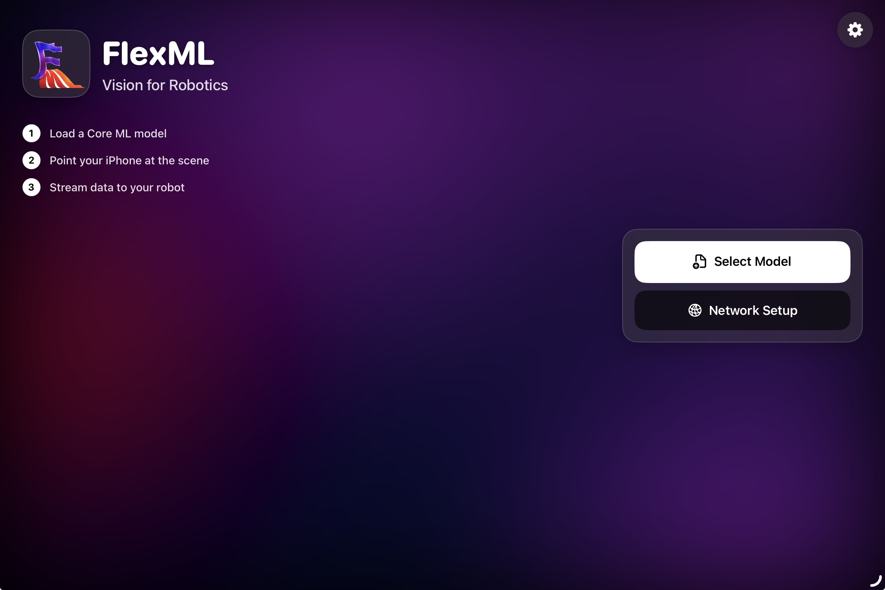
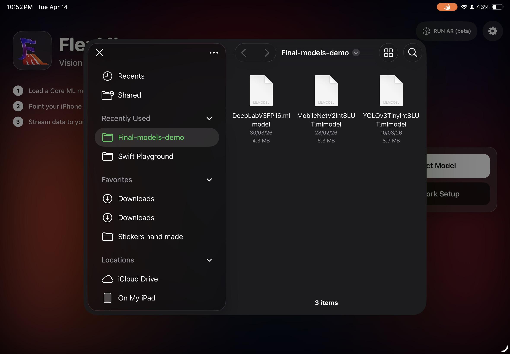
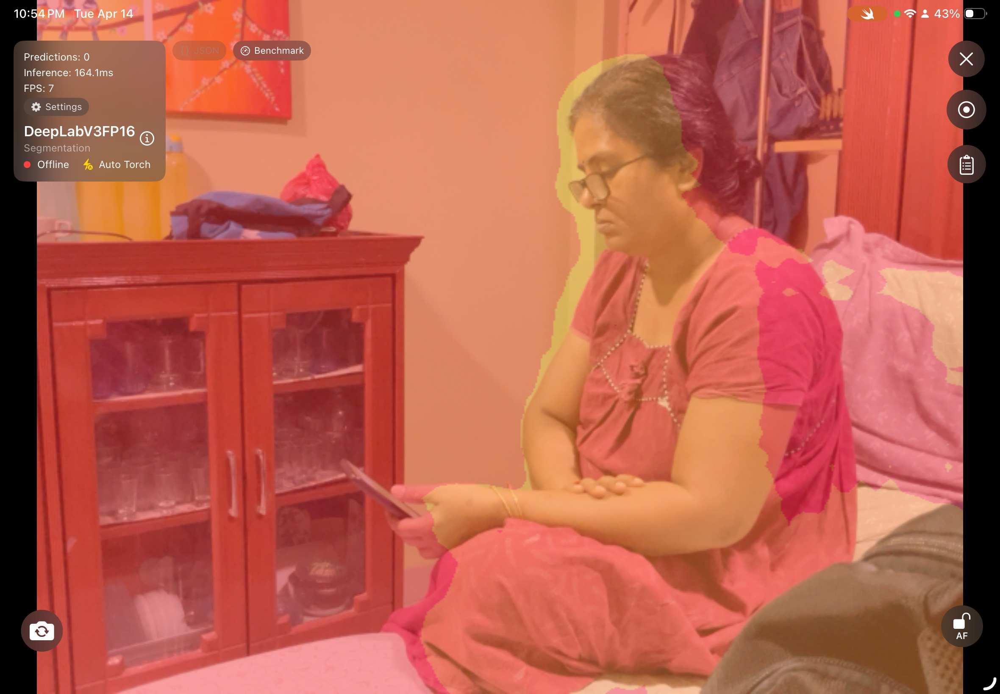
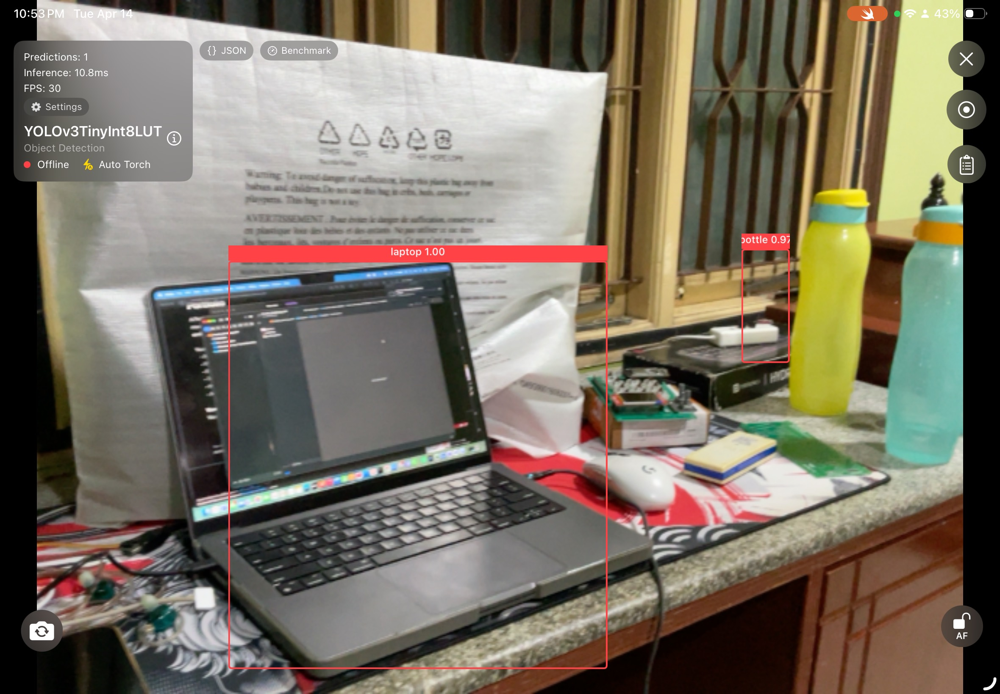
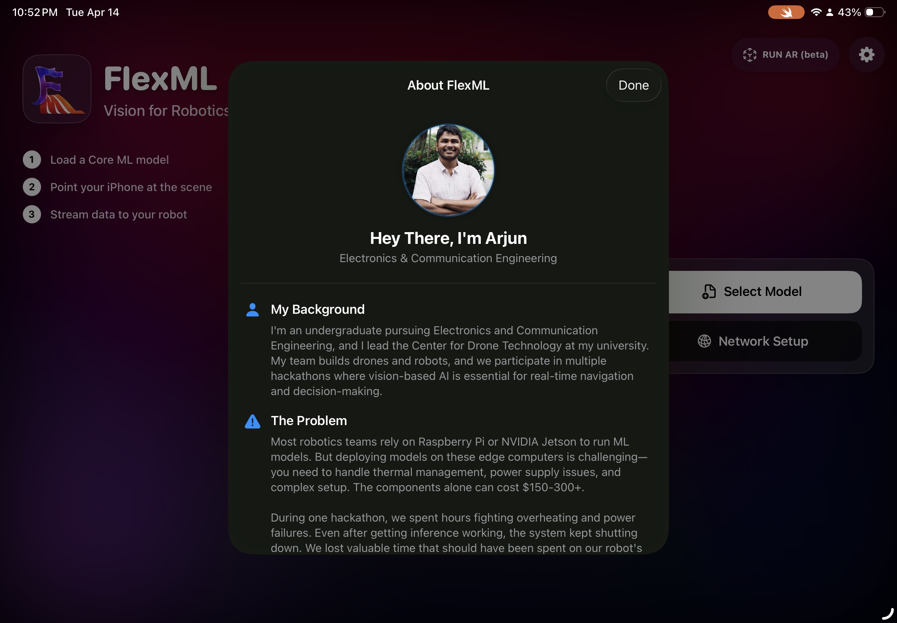

Problem
Robotics teams often depend on Raspberry Pi or NVIDIA Jetson setups for on-device vision. That adds cost, thermal management issues, power complexity, and fragile setup time that should be spent on the robot itself.
FlexML
FlexML reframes the smartphone as an accessible robotics component: a camera, inference engine, interface, and communications layer bundled into one familiar device.
Robotics teams often depend on Raspberry Pi or NVIDIA Jetson setups for on-device vision. That adds cost, thermal management issues, power complexity, and fragile setup time that should be spent on the robot itself.
Developer. I handled the concept, product framing, iOS implementation, model deployment workflow, and the technical story around why the phone should become the robotics node.
FlexML taught me that high-end engineering only becomes compelling when the entry point is simple. The most important work was not just model execution; it was translating capability into a product people could approach confidently.

A bold, simple interface focused on loading a model and getting to the scene quickly.

The workflow supports selecting and switching models without rebuilding the whole app.

Segmentation model running on-device through the same pipeline.

The system is meant to feel immediate, with model output visible in the interface itself.

The project narrative explains why the iPhone is the right platform for the problem.